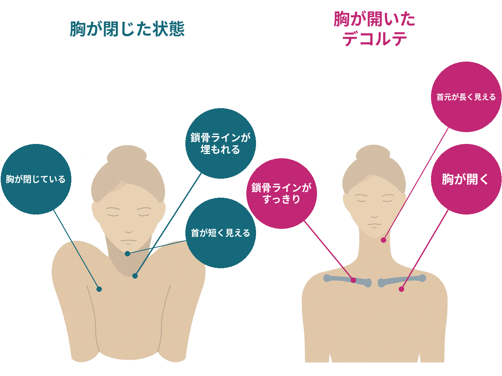

鎖骨ライン（デコルテ）
美容整体ステラ・ポラリス東三国｜大阪市淀川区東三国・東三国駅徒歩5分・女性向け

埋もれた鎖骨を出す。リンパと骨格調整でドレスの似合う肩へ
鎖骨は、姿勢や胸まわりの筋肉の状態によって見え方が変わる骨です。猫背や巻き肩で胸が縮こまると、鎖骨が筋肉の張りやむくみに埋もれて見えにくくなります。デコルテは顔に近く、第一印象を左右するパーツでもあります。ドレスや首元の開いた服を着る機会に向けて、鎖骨のラインやすっきりした首元を意識したいというご相談は少なくありません。このページでは、鎖骨が見えにくくなる仕組みと、鎖骨のラインが自然に見える姿勢を目指す当サロンでのケア、ご自宅でできるセルフケアをご案内します。まずは下のチェックで、ご自身の状態を確かめてみてください。
ご予約はこちら（Coubic）こんなお悩みありませんか
- 鎖骨がまわりの肉に埋もれて、ラインが見えにくい
- 首が短く見える、肩が盛り上がって見えるのが気になる
- 首元の開いた服を着ると、デコルテの印象が重く感じる
- 夕方になると、首や肩まわりがむくんだように感じる
- 猫背や巻き肩で、胸が縮こまっている気がする
- ブライダルやイベントを控えていて、首元をすっきり見せたい
- 顔のむくみと一緒に、首元まで重く感じることがある
当てはまる項目が多いほど、姿勢の崩れや胸まわりの縮こまりが、鎖骨の見え方に影響している目安とされています。鎖骨そのものではなく、土台である姿勢と巡りが関係しているのがポイントです。次のセルフチェックで、今の鎖骨の見え方の傾向を確かめてみましょう。
簡単セルフチェック（鏡での鎖骨チェック）
鏡の前でできる、鎖骨の見え方の傾向を知るための簡単な方法です。
- 鏡の前にまっすぐ立ち、力を抜いた自然な姿勢で、左右の鎖骨の見え方を確認します。
- 次に、肩をすっと下げて胸を軽く開き、鎖骨の見え方がどう変わるかを確認します。
- 姿勢を変えると鎖骨のラインが見えやすくなる場合は、鎖骨そのものより姿勢や胸まわりの状態が影響している目安と言われています。
※これは診断ではありません。ご自身の状態の傾向を知る目安としてお使いください。
鎖骨ライン（デコルテ）の原因と仕組み
鎖骨の位置と姿勢の関係
鎖骨は、肩甲骨や腕の骨とつながり、胸の上部を横に渡るようについている骨です。姿勢がまっすぐなときは鎖骨のラインは自然に見えますが、猫背や巻き肩で肩が前に出ると、鎖骨は斜めに傾いて周囲の筋肉に埋もれたように見えやすくなります。つまり、鎖骨の見え方は骨そのものの形だけでなく、そのときの姿勢に大きく左右されるということです。図1のように、鎖骨の見えにくさは、姿勢・胸まわり・首元全体の状態とつながっています。

図1 鎖骨が埋もれて見える姿勢で起こりやすい変化と、鎖骨のラインが見える姿勢のイメージ。姿勢の状態には個人差があります。
胸まわりの筋肉の縮こまり
胸の前の筋肉が縮こまった状態が続くと、肩は内側に引っぱられ、鎖骨まわりの皮膚や筋肉にも張りが出やすくなります。デスクワークやスマートフォンの姿勢は胸を縮める方向に働くため、気づかないうちに鎖骨が埋もれる土台がつくられていくと言われています。胸まわりがゆるんで開きやすくなると、鎖骨のラインも自然と見えやすくなります。
首・肩まわりの巡りとむくみ感
鎖骨のまわりには、首や顔から流れていく巡りの通り道があります。首や肩の緊張が続くと巡りが滞りやすく、鎖骨の上下がむくんだように感じたり、ラインがぼんやりしたりすることがあります。鎖骨まわりをやさしく流すケアは、首元全体の軽さにもつながります。
第一印象を左右するデコルテ
デコルテは顔のすぐ下にあり、会話のときにも視線が集まりやすいパーツです。鎖骨のラインが見え、首が長く見える姿勢は、それだけで上品で軽やかな印象につながります。土台の姿勢から整えることが、デコルテの印象づくりの近道になります。
セルフケアで足りる場合・サロンケアが向く場合
姿勢を意識したときに鎖骨のラインが見えやすく、むくみ感も軽い日が多い場合は、まずご自宅でのセルフケアを続けて様子を見る方法があります。一方で、胸まわりが自分ではゆるめにくい、鎖骨の上下の巡りをプロの手で流したい、ブライダルやイベントに向けて首元を整えたいという場合は、サロンでのケアが向いている目安になります。サロンでは、胸まわりをゆるめて肩の位置を整えることで、施術後に「首元が軽くなった」「鎖骨が見える」と感じやすい状態を目指します。どちらが正解というものではなく、今の状態に合わせて選ぶことが大切です。
当サロンでのケア
当サロンのデコルテケアは、「鎖骨のラインが自然に見える姿勢と巡り」を目指す組み立てです。鎖骨まわりだけでなく、土台である姿勢から整え、部位と目的に合わせて3つの手技を組み合わせます。
美容整体：肩の位置と背骨のラインを整え、鎖骨が自然に見える姿勢の土台をつくることを目的に。胸が開いた姿勢の感覚もお伝えします。
アロマオイルマッサージ：胸まわりの筋肉をオイルでやわらかくゆるめ、鎖骨の上下をなでるような手技で巡りを流すイメージでケアします。香りに包まれるリラックス感の高いケアです。
もみほぐし：首や肩の固まりやすい筋肉をほぐし、首元の重さの背景になりやすい緊張をゆるめることを目的に進めます。
ケアを通して目指すのは、こんな変化です。
- 鎖骨のラインが見えやすくなり、首元がすっきりした印象へ
- 肩が下がって首が長く見える姿勢へ
- デコルテが軽やかになり、ドレスや首元の開いた服が似合う印象へ
- 首・肩のむくみ感がゆるんで、夕方の重さを感じにくい状態へ
- 胸が開いて、深い呼吸がしやすい体感へ
ブライダルやイベント前のケアとしてもご相談いただけます。施術の前後で鏡を見ながら鎖骨の見え方を一緒に確認し、「首元が軽くなった」「鎖骨のラインが出てきた」といった感覚の違いを確かめます。首元が軽やかになった感覚と、鏡を見るのが楽しみになるような仕上がりを大切にしています。

施術の流れ
ご来店後、気になる部位やお悩み、ご希望の強さなどをうかがいます。完全個室のため、周りを気にせずお話しいただけます。
肩の位置や鎖骨の見え方、胸の開き具合などを一緒に確認し、その日の状態に合わせた施術の進め方をご案内します。
美容整体を中心に、ご希望に応じてアロマオイルマッサージ、もみほぐしを組み合わせて進めます。強さは途中でも調整できます。
施術後の状態を確認し、ご自宅で続けやすいセルフケアのポイントをお伝えします。次回の目安についても、ご希望があればご案内します。
料金
| コース | 通常価格 | キャンペーン価格（12/25まで） |
|---|---|---|
| 80分 | 8,000円 | 3,000円 |
| 100分 | 10,000円 | 4,000円 |
| 120分 | 12,000円 | 5,000円 |
クリスマスキャンペーンは12月25日まで、ご新規様もリピーターの方も対象です。施術内容は当日の状態とご希望に合わせて組み立てます。
ご自宅でできるセルフケア
- 鎖骨まわりの流しケア：鎖骨の上と下を、指の腹で内側から外側へやさしくなでます。左右各5回ほど、朝の身支度や入浴後のタイミングが目安です。強く押さず、なでる程度のやさしさで行ってください。
- 胸を開くストレッチ：ドアの枠や壁に前腕をつけ、体を少し前に傾けて胸の前を伸ばします。左右それぞれ20〜30秒を2セット、1日1〜2回が目安です。
- 肩回し：両肩を耳に近づけてから、大きく後ろへ回して下ろします。ゆっくり10回、デスクワークの合間に取り入れると首元の重さ対策にもなります。
- 首元を温める：蒸しタオルで首から鎖骨まわりを温めると、巡りが流れやすい状態になります。セルフケアの前に取り入れるのがおすすめです。
ご自宅でのケアに：セルフケア資料ライブラリ（無料）
このお悩みに合わせたセルフケアの考え方を、無料の資料ライブラリでご紹介しています。
セルフケア資料ライブラリを開く →
受診の目安
鎖骨まわりにしこりや腫れ、痛みがある場合は、施術の前にまず医療機関で確認されることをおすすめします。また、首や腕のしびれを伴う場合も、医療機関でご相談ください。
よくある質問
Q. 初めてでも大丈夫ですか？
はい。当サロンは完全予約制・完全個室で、1日3組までのご案内です。最初にカウンセリングで気になる部位やご予定（ブライダル・イベントなど）をうかがい、無理のない内容から始めます。施術の前後で鏡を見ながら「首元が軽くなった」「鎖骨が見える」といった感覚の違いを一緒に確認しながら進めますので、初めての方も安心してご利用いただけます。
Q. 施術は痛いですか？
強さは、ご希望をうかがいながら調整します。デコルテはデリケートな部位のため、強い力ではなく、なでるようなやさしい手技を中心に進めます。感じ方には個人差がありますので、施術中も遠慮なくお声がけください。
Q. コースはどう選べばいいですか？
80分・100分・120分のコースがあり、ケアしたい部位の広さやお時間のご都合に合わせて選べます。デコルテのケアで首・肩から胸まわり、背中までゆっくり整えたい方には、100分が選ばれることが多いコースです。迷われる場合は、ご予約の際にお気軽にご相談ください。
Q. 場所と予約方法を教えてください。
大阪市淀川区東三国、東三国駅から徒歩5分です。完全予約制のため、予約サイト（Coubic）またはLINE公式アカウントからご予約をお願いしています。
Q. 男性も受けられますか？
当サロンは女性向けのため、男性の方は、同じ東三国の男性専用整体院「北辰堂」をご案内しています。
施術者について
平賀建人（施術歴30年）
鍼灸師・登録販売者・アロマセラピスト・パーソナルトレーナーの資格を持ち、美容整体を中心に、アロマオイルマッサージ、もみほぐしを、その日の状態とご希望に合わせて組み合わせて施術します。このページの内容は、施術者の知識と経験をもとに作成しています。

料金・ご予約
ご新規様もリピーターの方も 12/25まで
80分 3,000円／100分 4,000円／120分 5,000円
通常価格は80分8,000円／100分10,000円／120分12,000円です。施術内容はご希望に合わせて組み立てます。
営業時間：月〜土 17:00〜23:00／日 10:00〜23:00（完全予約制）｜電話：080-2468-3086
大阪府大阪市淀川区東三国2丁目25番4号101（東三国駅徒歩5分）